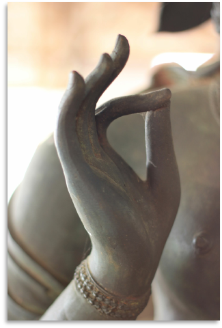

YOGA WITH JANNA
I received my 500-hour teaching certification from YogaWorks in New York City and am a Registered Yoga Teacher with Yoga Alliance. I have been practicing since 1997 and teaching since 2005. My classes involve strong dynamic movement, with emphasis on alignment, and a meditative rhythm informed by the breath. Exploration and inquiry are encouraged as well as a healthy dose of laugher. Expect to spend some time breaking down challenging poses (such as inversions, arm balances, and deep backbends), to look for ways to deepen more basic poses, and to learn a little anatomy along the way. I believe in playing with boundaries and in deep, restorative recovery. Since obtaining my masters degree in traditional Chinese medicine my focus has been on working privately with students with injuries or other physical limitations. I am currently available to teach private lessons at your home or at Thrive, corporate group classes, and private parties.
To set up a private lesson or private group class at your event or office, contact Janna by phone or E-mail at: 212-763-6628 | janna@thriveacupunctureny.com
DESCRIPTION OF SERVICES
Yoga Privates: Yoga privates are appropriate for all levels, from beginners to advanced students, and anyone working with an injury or complicated physical condition. I treat private yoga sessions like individual mini-workshops where we can further your understanding and progress by breaking down poses, adjusting or modifying poses to optimize the benefits for you, and address your individual goals. I will teach you how to grow in areas you find to be challenging, to challenge yourself in areas where you are starting to plateau, and share a deeper knowledge of areas of the practice that you are curious to learn more about.
In-home privates can be scheduled at your convenience and privates taught at Thrive Acupuncture can be scheduled during regular business hours for a significant discount.
Corporate Yoga: I will work with a representative at your office to set up a regular schedule of semi-private, open-level classes for you and your co-workers, helping to reduce stress, increase efficiency, and encourage camaraderie and good health for you and your colleagues.
Private Parties: Give your special event a healthy twist: birthdays, bachelorettes, bridal parties, family functions, and everything in between, I will come to your space and provide a special experience for you and your friends.
PAST WORKSHOPS AND EVENTS
with Mimi Rosetti, Janna Siegel & Julie Mellk at Princeton Center for Yoga and Health
Essential Oils – Learn how oils can help to uplift your mood, focus your mind, and heal common ailments. Make your own oil remedy roller or spray to use throughout the day’s events and to take home with you.
Yoga for a Healthy Spine – Identify and move out of the habitual behaviors that may be causing you discomfort inside and outside the yoga studio. Leave feeling taller, unkinked, and breathing easier.
Exploring Our potential Through Chinese Medicine 5-Element Theory – Discover how our facial features and dominant personality traits reveal our innate powers and offer us guidance to making more fulfilling and purposeful choices. We’ll discuss how our inclinations and their physical manifestations can help uncover our gifts and give us insights toward living a more satisfying and peaceful life.
Restorative Yoga and Meditation – Conclude the day with a luxurious restorative and guided meditation practice. Three expert yoga teachers will lead and assist with prop set-ups and personal adjustments making the end of your journey ultra-calming. Learn simple meditation techniques to implement on your own with ease.
A Summer Celebration Applying Chinese Medicine Theory to Asana
June 21 is the summer solstice, the apex of the season and the longest day of the year! In Chinese Medicine theory, summer is the season of Fire, Spirit, and the Heart. In this phase of the cycle we are encouraged to stretch to our full potential, fulfilling desire, fine-tuning our intuition, and opening up to the warmth and radiance reflected from the sun and our own brilliance.
In this workshop we will discuss the channels, elements, emotions, and aspects of our spirit associated with summer and how we can utilize this information to tap into our strengths during these warm months. The format is a 1-hour discussion followed by a 2-hour yoga practice geared toward opening the corresponding channels and harnessing the powers associated with the season.
This practice will be invigorating and uplifting, with focus on opening the shoulders and chest and finding and expressing our inner joy.
With Janna Siegel and Elizabeth Neuse Flint
This nourishing day long retreat will include a challenging two-hour Hatha Vinyasa yoga practice, walking meditation in the woods, and a luxurious Restorative yoga practice with optional acupuncture. Pure bliss! Morning tea and lunch are included in the fee. Transportation arrangements can be made through Janna and Elizabeth at an additional fee.